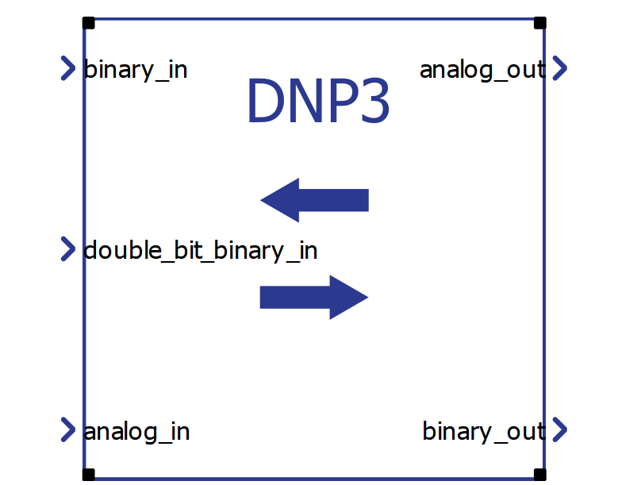
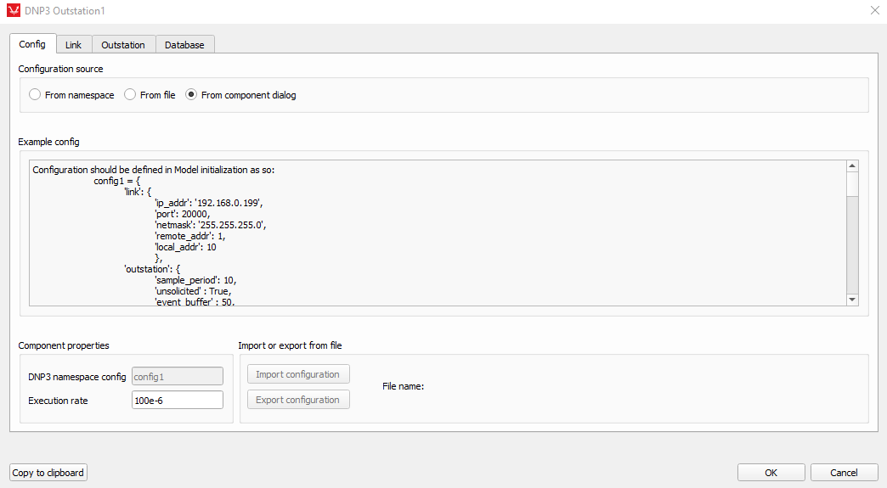
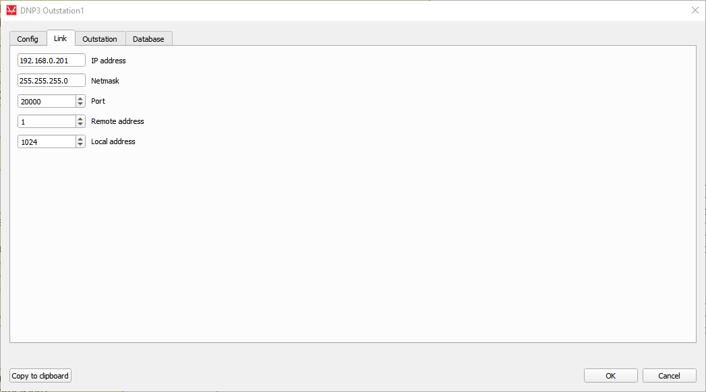
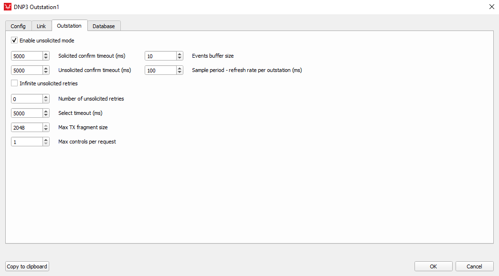
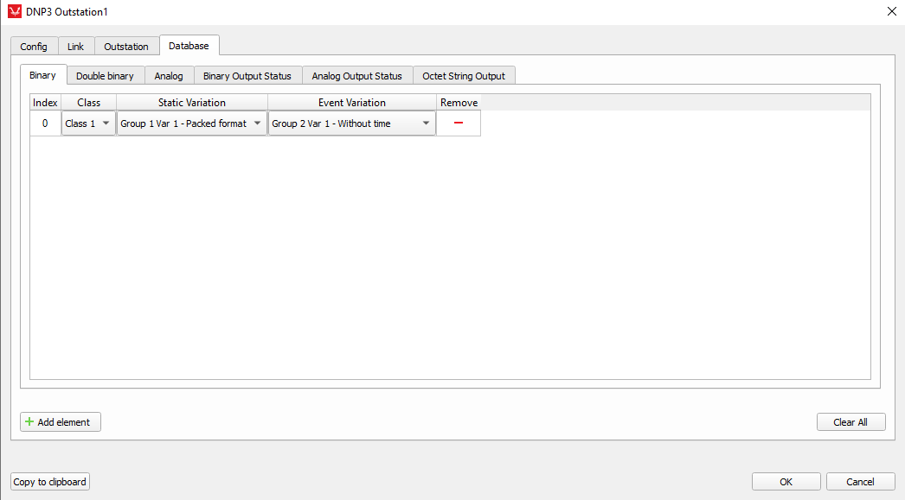
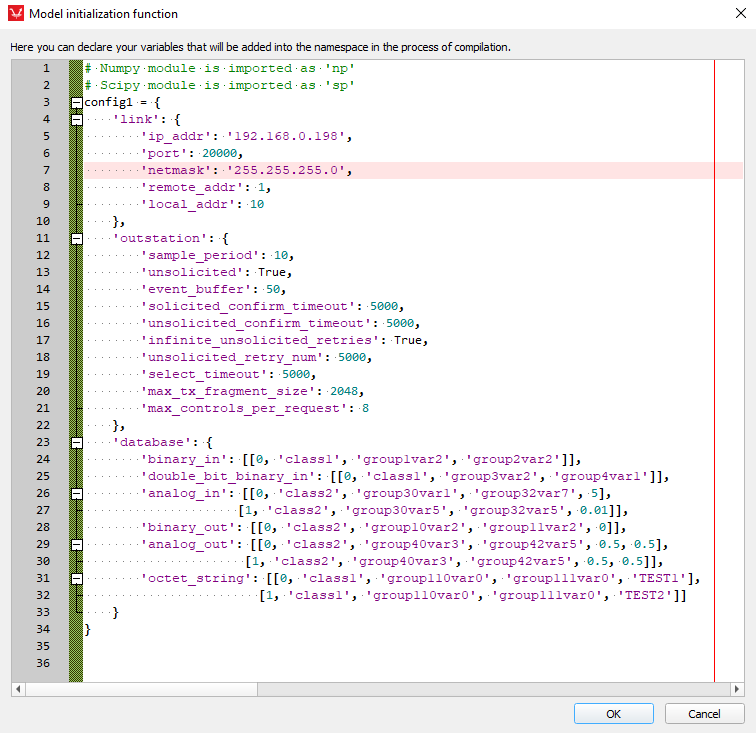

DNP3 Outstation
Description of the DNP3 Outstation component in Schematic Editor.
DNP3 Outstation
DNP3 is an open set of communication protocols mainly used in electric and water industries. It is primarily used in SCADA systems for communication between SCADA masters and RTUs and IEDs. DNP3 can have masters and outstations with point to point or multi-drop topologies. DNP3 is event oriented which means that master does not have to constantly scan the outstation for every single data point. In DNP3 there are two main mechanisms for data acquisition:
- Event polling – master asks outstations only for changed data at regular intervals. Data can be organized in to different classes, and every class can have their own scanning interval
- Unsolicited responses – outstations automatically report back changed data to masters and masters confirm the data. This mode is sometimes called ‘quiescent mode’ since network is silent if there are no changes to the outstations data points.
DNP3 Outstation component in the Typhoon HIL toolchain
In the Typhoon HIL toolchain only DNP3 Outstations are available. The protocol is supported by the following Typhoon HIL devices: HIL402, HIL101, HIL404, HIL602+, HIL604, HIL506, and HIL606.
The DNP3 Outstation component has 3 inputs and 2 outputs as shown in Figure 1.

DNP3 component dialog consists of Config (Config tab), Link (Link tab), Outstation (Outstation tab) and Database tabs (Database tab).

The configuration for each DNP3 outstation can be imported from the model initialization script (From namespace), From a file, or from the component graphical dialog (From dialog) which can be selected at the top of the Config tab. An example configuration is shown from the model initialization script, alongside a short explanation for each key necessary in the configuration dictionary. At the bottom left corner of the Config tab, in the Component properties group box, are line edit fields for name of the configuration and execution rate of the component. At the bottom right corner of the Config tab configuration file can be imported or current configuration exported to a file.

Each DNP3 device communicates with other devices over a channel. Two devices have to be on the same channel in order to communicate with each other. A unique channel is defined as an IP address and port combination used for the device. For a single device, a channel is automatically created for each different port since IP addresses on the device are aliased. Each DNP3 outstation needs to have defined remote and local address. Remote address is the address for the DNP3 master to which the outstation reports. Local address is the address of the outstation. Two DNP3 outstations on the same channel cannot have identical local addresses, but may have same remote (master) address. Remote and local addresses can have values from 0 to 65530. Settings for addresses and ports are available in the Link tab of the component or under the ‘link’ key in the configuration dictionary.

These settings define behavior of the outstation such as unsolicited responses, various timeouts and retry periods, maximum number of events for each data point (events buffer size) and sample period for each outstation.

In the Database tab there are 6 available sub tabs for each data type. Currently 6 data (object) types are supported. Input data types are Binary, Double bit binary and Analog. Output data types are Binary output status (status of Control relay output blocks – CROBs), Analog output status, and Octet string.
At the bottom left of the Database tab is located Add element button for adding elements to the current data type. At the bottom right of the Database tab is located Clear All button for clearing all entries in the current data type. At the rightmost of each data point is located remove button for that data point. Each datatype has 4 fixed properties: Index, Class, Static and Event variation. Analog and Analog output status datatypes have additional Deadband property. Binary output status, Analog outputs, and Octet string datatypes also define an initial value property.
Index – each data type has Index property for each data point in that particular data type. Each data type can have up to 65 535 data points.
Class – each data type has a Class property. Data points can be assigned to Class0, Class1, Class2 or Class3. Class0 is used for static data (current value) while data points in classes 1, 2 and 3 also contain event data (previous values) and can be arbitrarily assigned to each data point
Static and Event variations – each data type has a Static and Event variation property. These variations depend on the data (object) type used. Available variations for each data type are shown in the table below.
| Data (object) type | Static variations | Event Variations |
| Binary input |
|
|
| Double bit binary input |
|
|
| Analog in |
|
|
| Binary output status |
|
|
| Analog output status |
|
|
| Octet string |
|
|
For detailed description of each Static and Event variation, please refer to DNP3 documentation available at the website of the DNP organization.
Deadband – as mentioned before, Analog input and Analog output status have Deadband property. Deadband is floating point value which is used as filter for fast changing values. For example, if deadband value is set to 0.5 and if the difference between current and previous value of the data point is smaller than 0.5, outstation will not generate event change for that point. If the difference is larger than the deadband value, event is generated and value is updated.
Initial Value - this is a property unique to Binary output status, Analog output status, and Octet string data types. Setting this property changes the value which will be output at the beginning of the simulation.
At the bottom of the whole dialog from left to right are copy to clipboard, ok, and cancel buttons.
Copy to clipboard button copies current configuration of the component to the clipboard for an easy way of transferring configuration to model initialization script or sharing configuration with other users. Example configuration from model initialization script (python dictionary format):

If database entry for specific data type is not needed, use empty list [] as the value for the data type key. All keys are mandatory.
Time synchronization
If there is a need for time synchronization, please take a look at Time synchronization.
Virtual HIL support
Virtual HIL currently does not support this protocol. When using a non-real-time environment (e.g. when running the model on a local computer), inputs to this component will be discarded and outputs from this component will be zeroed.